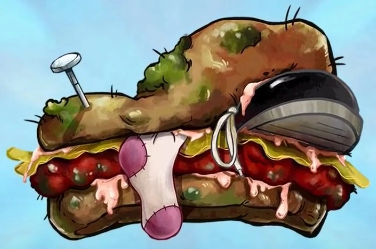

Home
Traditional american burger

Description
A beef patty of uncertain thickness, cooked until it has made peace with itself, placed on a bun that was toasted for exactly too long on one side only. Topped with a single slice of orange cheese applied too early so it has both melted and somehow hardened, three pickles arranged without intention, ketchup applied in a motion best described as a gesture, and a piece of lettuce that is technically there. The whole structure leans slightly to the left. It is held together by a cocktail stick that inspires no confidence. Best eaten over a sink.
Ingredients
- Beef patty (thickness: uncertain)
- 1 bun (toasted wrong)
- 1 slice orange cheese (applied at the wrong moment)
- 3 pickles (arranged without intention)
- Ketchup (applied as a gesture)
- 1 piece of lettuce (technically present)
- 1 cocktail stick (inspiring no confidence)
Steps
- Form beef into a patty of uncertain thickness using your hands and no ruler
- Cook patty until it has made peace with itself, flipping once at the wrong time
- Apply cheese slice immediately too early so it both melts and re-solidifies into a new state of matter
- Toast bun on one side only, for too long
- Apply ketchup to the bottom bun in a single sweeping gesture. Do not correct it.
- Place lettuce. It will move. Leave it.
- Add three pickles without looking
- Stack patty on top. The structure will lean. This is load-bearing character.
- Impale with cocktail stick at a slight angle
- Carry to the sink and eat there